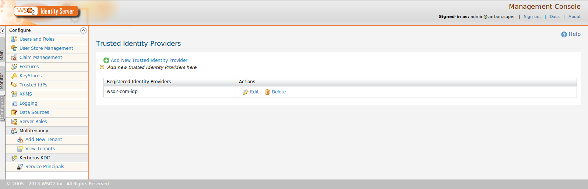
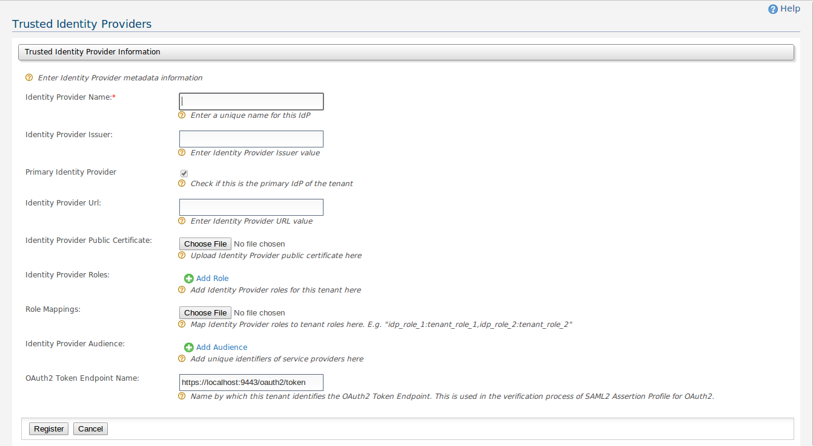

Trusted Identity Providers
This user guide describes the user identity management related options and configurations available in the WSO2 Identity Server.
You can use the left hand side "Configure" menu to complete the below mentioned configuration and options details.
Trusted Identity Providers Management
Trusted Identity Providers are the Identity Providers that are trusted by that tenant.
These Identity Providers can be configured by tenant admins. These Trusted Identity Providers can be used for many different use cases.
E.g. The SAML2 Assertion Profile for OAuth2 uses the trusted Identity providers to verify the SAML Assertion.
Following section describes adding Trusted Identity Providers to the system by Administrator. Click on Configure tab > Trusted IdPs.
The Trusted Identity Providers Management page will be shown which is depicted in the Figure 1.
From here you can add new Trusted Identity Providers for the tenant by clicking on the Add New Trusted Identity Provider link at the top.
You can also edit and delete registered Trusted Identity Providers by clicking the corresponding links against them.

Figure 1 : Trusted Identity Providers Management
Adding/Editing Trusted Identity Providers
You can add or edit Trusted Identity Providers using the form shown in Figure 2.
Following is a short description of the fields.
- Identity Provider Name - This is the unique name of this Identity Provider across this tenant.
- Identity Provider Issuer - The Issuer name of this Identity Provider. This will be used for validating Issuer name of the SAML token when using the validation APIs.
- Primary Identity Provider - Indicates if this is the primary Identity Provider for this tenant. The first Identity Provider registered would be primary by default.
- Identity Provider URL - The URL of this Identity Provider.
- Identity Provider Public Certificate - The public certificate of this Identity Provider. This will be used for validating SAML token signatures when using the validation APIs.
- Identity Provider Roles - The roles that are registered for this tenant at the Identity Provider.
- Role Mappings - Map Identity Provider Roles to tenant roles in the Identity Server.
- Identity Provider Audience - Mandatory audience restriction elements that need to be present in the SAML token when it is to be used by this tenant for any purpose. This will be used for validating SAML token Audience Restriction when using the validation APIs.
- OAuth2 Token Endpoint Name - The OAuth2 Token Endpoint URL or any alias used to refer to it uniquely within the tenant. This will be used when validating Audience Restriction of the SAML token under the SAML2 Assertion Profile for OAuth2.

Figure 2 : Add/Edit Trusted Identity Providers